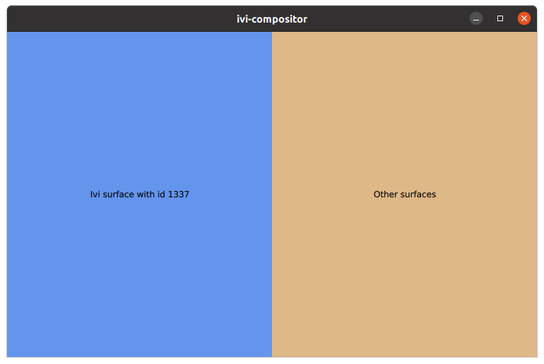
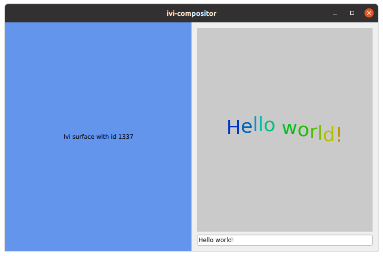
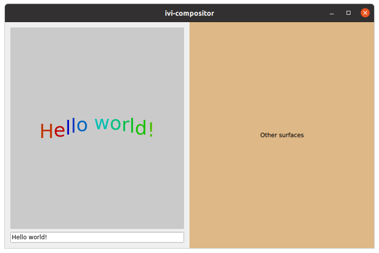

Qt Wayland Compositor Examples - IVI Compositor
IVI Compositor is an example that demonstrates how to use the IviApplication extension.
Introduction
This example demonstrates using the IviApplication shell extension in a Wayland display server (also known as a Wayland compositor).
For an introduction to the basic principles of creating a Qt Wayland Compositor with Qt, see the Minimal QML example.
The Protocol
IviApplication is a shell extension that was designed specifically for making In-vehice Infotainment systems.
It is a minimalistic protocol, and only provides the following functionality:
- The client can identify itself with an IVI-id.
- The server can request that the client resizes itself.
The Identification Numbers
In a typical IviApplication setup, you will have a predefined set of applications that can connect to the server. Since these applications are already known when the system is designed, they can be assigned hardcoded numbers that identify them. Given that the client and server agree on these numbers ahead of time, semantics can be built into the ID numbers.
For instance, if a client identifies itself as the navigation application, the server can recognize this and allocate a large, centered part of the screen for its window. An application identifying itself as a clock, on the other hand, might be delegated to a smaller area in the margins of the screen.
By default, Qt applications will advertise their system PIDs ("process IDs") as the IVI-id. The client can override this by setting QT_IVI_SURFACE_ID in its environment before connecting to the server.
The Example
A Qt Wayland Compositor may support multiple shell extensions at once, but the IVICompositor example only supports the IviApplication protocol. This means that the clients have to also support this shell extension in order to connect to the server.
The compositor window in the example is split into two horizontally: A left area which is designated for a specialized application with the id "1337", and a right area which is for all other applications.

Creating the Layout
The layout of the window is created inside a WaylandOutput. This typically corresponds to a physical screen available to the compositor. If a single WaylandOutput is created, as in the IVICompositor example, it will usually correspond to the primary screen.
WaylandOutput { sizeFollowsWindow: true window: Window { width: 1024 height: 768 visible: true Rectangle { id: leftArea width: parent.width / 2 height: parent.height anchors.left: parent.left color: "cornflowerblue" Text { anchors.centerIn: parent text: "Ivi surface with id 1337" } } Rectangle { id: rightArea width: parent.width / 2 height: parent.height anchors.right: parent.right color: "burlywood" Text { anchors.centerIn: parent text: "Other surfaces" } } } }
The code creates a WaylandOutput for the screen and creates a Window on this as the top level container of all compositor contents. Inside this window, it creates two rectangles that will serve as containers for applications as they connect.
Connecting Clients
If no additional configuration has been done, a Qt application will connect with an IVI-id equal to its process ID. For instance, if we run the Wiggly Example with -platform wayland, it will be delegated to the right-hand side of the layout, granted that its ID is different from "1337".

However, if we set the QT_IVI_SURFACE_ID environment variable to "1337" before starting the example, it will be delegated to the left-hand side of the layout.

When a client connects to the IVIApplication interface, it will emit the iviSurfaceCreated signal. This is where the positioning of the application's surface is handled.
IviApplication { onIviSurfaceCreated: { var surfaceArea = iviSurface.iviId === 1337 ? leftArea : rightArea; var item = chromeComponent.createObject(surfaceArea, { "shellSurface": iviSurface } ); item.handleResized(); } }
The iviSurfaceCreated signal receives an IviSurface argument which can be used to access the client's ID. The compositor then creates a ShellSurfaceItem for the surface (as defined by the chromeComponent). ShellSurfaceItem is the class used for placing shell surfaces into the Qt Quick scene, and you will see this same pattern in all the Qt Wayland Compositor examples.
What makes the IVICompositor example special is that it checks the iviId property of the incoming shell surface and decides on a parent for the ShellSurfaceItem depending on what this is. If the ID is equal to "1337" it will be parented to the leftArea, and if not it will be in the rightArea.
The implementation of the ShellSurfaceItem handles resizing by informing the client whenever the size changes (which can happen if the compositor is running inside a desktop-style windowing system and its window is resized).
onWidthChanged: handleResized() onHeightChanged: handleResized() function handleResized() { shellSurface.sendConfigure(Qt.size(width, height)); }
The sendConfigure() method is defined in IviSurface and will send an event to the client. The client will receive a resize event with the new size, so it can relayout its contents.
If multiple applications connect to the same area in the layout, they will simply be stacked according to normal Qt Quick ordering rules. There are no built-in mechanisms for closing applications or managing state, but this can easily be added as ordinary Qt Quick code.